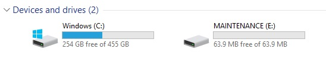
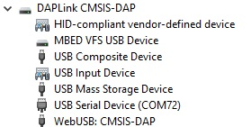
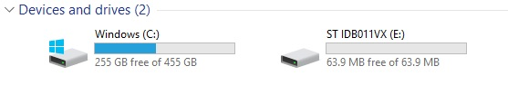
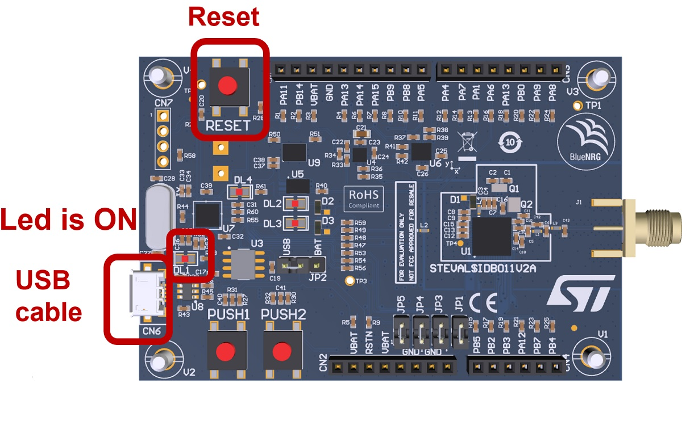

This document contains the guidelines for updating the USB_CMSISDAP FW on BlueNRG-LP/BlueNRG-LPS development platform with the USB_CMSISDAP_{LP|LPS}.hex binary files available on latest STSW-BNRGLP-DK, BlueNRG-LP, BlueNRG-LPS DK SW package.
This procedure must be applied only one time on the selected platform, in order to align to the latest version of USB_CMSISDAP binary file.
Introduction
- The BlueNRG-LP/BlueNRG-LPS development platform USB_CMSISDAP component allows:
-
CMIS-DAP debug/programming capability through the USB micro connector.
-
USB to serial bridge providing an I/O communication channel with the BlueNRG-LP/BlueNRG-LPS device (for interfacing to a USB host device as a PC).
-
Drag and drop capability for directly programming the BlueNRG-LP/BlueNRG-LPS device.
USB_CMSISDAP FW version check procedure
- Preliminary steps (make sure the right Virtual COM driver is available on user PC):
-
Windows 10: no action is required.
- In order to check USB_CMSISDAP firmware version, user must follow these steps:
-
Connect the BlueNRG-LP, STEVAL-IDB011V{1|2} or a BlueNRG-LPS, STEVAL-IDB012V1 development platform to a PC USB port
-
Copy the DTM_UART_WITH_UPDATER.hex binary file by Drag-and-drop on the ST-IDB01xVX (this image is available on BlueNRG-LP_LPS SDK: Firmware\BLE_Examples\DTM\{STEVAL-IDB011V1| STEVAL-IDB012V1})
-
Once the image download, open the BlueNRG GUI PC application available on STSW-BNRGUI SW package
-
Select the COM port associated to the plugged platform and press Open button
-
The Motherboard FW version provides the USB_CMSISDAP FW version
How to perform USB_CMSISDAP firmware upgrade
- In order to perform USB_CMSISDAP firmware upgrade, user must follow these steps:
-
Unplug the USB cable (if plugged).
-
Press and hold the RESET button.
-
Plug the USB cable.
-
Release the RESET button.
-
A new mass storage device called "MAINTENANCE" appears.
-
Copy and paste the new binary image into the mass storage device "MAINTENANCE":
-
Firmware\USB-CMSISDAP\USB_CMSISDAP_LP.hex on BlueNRG-LP kits and Firmware\USB-CMSISDAP\USB_CMSISDAP_LPS.hex on BlueNRG-LPS kits.
-
After the operation has been completed, unplug and then plug again the USB cable to make the board startup.
|

|
| Figure 1: BlueNRG-LP Development kit: MAINTENANCE mode |
How to check if the USB_CMSISDAP is functional
- In order to check if all the system is ready to use, just make the following checks:
-
Ensure the USB_CMSISDAP device is present in the Windows OS, Device Manager:
|

|
| Figure 2: BlueNRG-LP Development kit: Device Manager |
-
Ensure that the mass storage device "ST IDB011VX" is present on the Devices and drives (if the board is powered by USB cable and connected to a PC ):
|

|
| Figure 3: BlueNRG-LP Development kit: Devices and drivers |
-
The LED DL1 is ON (if the board is powered by USB).
- NOTE: the component of the Composite device: "WebUSB: CMSIS-DAP could be not installed. This is not relevant since the functionality is not used.
|

|
| Figure 4: STEVAL-IDB011Vx Development kit (BlueNRG-LP, QFN48 package) |
How to perform USB_CMSISDAP firmware upgrade through BlueNRG GUI
- BlueNRG GUI "Tools, Flash Motherboard FW ..." also allows to update the USB_CMSISDAP firmware on the selected platform.
- Refer to the BlueNRG GUI UM2058 document for detailed information.
 1.8.10
1.8.10